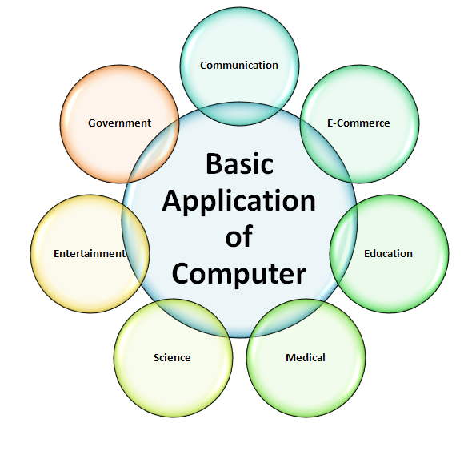

"What to do after BCA"
How many of you wonder which are all the best career options after BCA? What is the scope for BCA? What are BCA job opportunities? BCA is among the most popular graduation courses that students take after completing their school. In today’s day and age, getting a BCA degree is compulsory but it is not enough. It is not easy to find high paying jobs for BCA graduates if one has not chosen the right courses after BCA. One has to take up post-graduation or professional certificate to have a well-established career after BCA degree.
